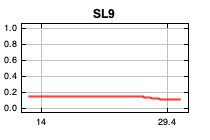
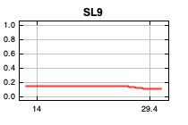
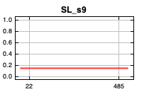
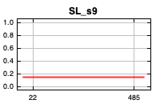

| Cumulative threshold | Cloglog threshold | Description | Fractional predicted area | Training omission rate |
|---|---|---|---|---|
| 1.000 | 0.002 | Fixed cumulative value 1 | 0.577 | 0.000 |
| 5.000 | 0.009 | Fixed cumulative value 5 | 0.199 | 0.000 |
| 10.000 | 0.044 | Fixed cumulative value 10 | 0.087 | 0.056 |
| 7.225 | 0.022 | Minimum training presence | 0.127 | 0.000 |
| 25.503 | 0.164 | 10 percentile training presence | 0.024 | 0.056 |
| 15.072 | 0.111 | Equal training sensitivity and specificity | 0.056 | 0.056 |
| 25.503 | 0.164 | Maximum training sensitivity plus specificity | 0.024 | 0.056 |
| 6.670 | 0.018 | Balance training omission, predicted area and threshold value | 0.140 | 0.000 |
| 18.065 | 0.131 | Equate entropy of thresholded and original distributions | 0.045 | 0.056 |

 



 



| Variable | Percent contribution | Permutation importance |
|---|---|---|
| SL1 | 37.9 | 0 |
| SL9 | 17.5 | 0.9 |
| SL_p12 | 16.1 | 11 |
| SL8 | 9 | 0 |
| SL10 | 4.9 | 0 |
| SL11 | 4.5 | 0 |
| SL_p1 | 4.4 | 1.2 |
| SL4 | 1.7 | 0 |
| SL6 | 1.7 | 33.1 |
| SL_p6 | 0.8 | 16.5 |
| SL2 | 0.5 | 0 |
| SL12 | 0.5 | 15.9 |
| SL_p11 | 0.2 | 0 |
| SL_p4 | 0.2 | 20.7 |
| SL_s1 | 0.1 | 0 |
| SL_s6 | 0 | 0.3 |
| SL_s12 | 0 | 0 |
| SL7 | 0 | 0.3 |
| SL_p3 | 0 | 0 |
| SL_p2 | 0 | 0 |
| SL_s10 | 0 | 0 |
| SL_p10 | 0 | 0 |
| SL_s11 | 0 | 0 |
| SL_s2 | 0 | 0 |
| SL_s3 | 0 | 0 |
| SL5 | 0 | 0 |
| SL_s4 | 0 | 0 |
| SL3 | 0 | 0 |
| SL_s5 | 0 | 0 |
| SL_p7 | 0 | 0 |
| SL_p9 | 0 | 0 |
| SL_p5 | 0 | 0 |
| SL_s9 | 0 | 0 |
| SL_s7 | 0 | 0 |
| SL_s8 | 0 | 0 |
| SL_p8 | 0 | 0 |